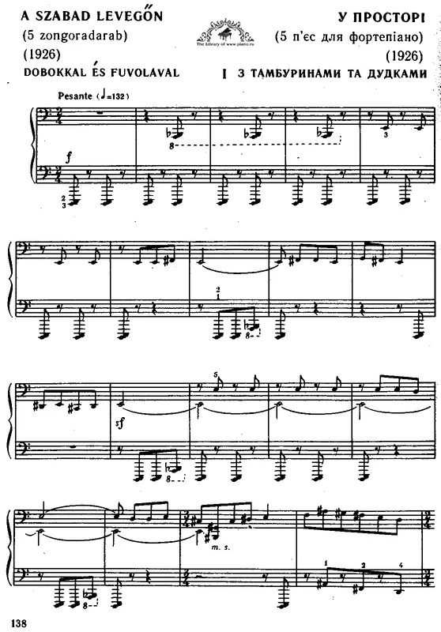

← Sandbox
All music
Bartók — Out of Doors, Sz.81
Performance
Out of Doors, Sz. 81
· Can Çakmur · 16:08
Play recording
Watch on YouTube
Play your own MIDI edition
Movement
Play
½ speed
¾ speed
1× speed
1¼ speed
Sheet music
Score editions on IMSLP
Publisher’s MIDI files
Score facsimile
